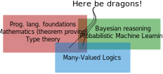

Data Analysis:
Context & Clarity Wanted
Data Deluge
A rapid increase in the volume of data is creating a huge market for data analytics
E.g. Uber's value is mostly derived from its data and how it could exploit it to develop autonomous driving.
Data has little intrinsic value, its valuable as the key ingredient to train models
Data analytics face many challenges, but in particular:
Context: Learning algorithms have little context to understand data.
Clarity: The output of learning algorithms is often difficult to interpret. Governments are moving to force companies to explain their decisions (e.g. Europe's GDPR).
Opportunity

Very long goal of A.I.: Nilsson's Probabilistic Logic (1986), Markov logic networks (Richardson and Domingos, 2006).
Recent theoretical and practical developments in Bayesian higher-order probabilistic programming (BHOPP):
Practical: Uber's Pyro exploits deep learning architecture for fast inference.
Theoretical: Bayesian inference with recursion (Staton, 2016).
Concrete Advantages
- Allows both logical and probabilistic reasoning.
- Defines probability distribution over complex logical relationships.
- Allows the introduction of mathematical and scientific knowledge.
- Models are clear and safe.
- Redefines data: programs, complex logical relationships, formulas are data.
Open-source library for stricter Bayesian higher-order probabilistic programming.